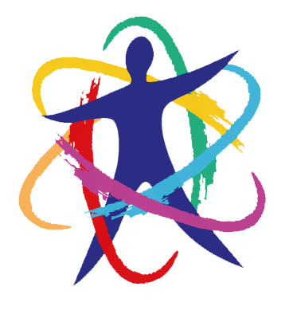

Introduction
Introduction
My name is Javaria. A queen was born on 5 oct 2000.I belong to Attock the districk of Punjab.I have completed my intermediate from Government Degree College For Women Attock.Now I am doing BS Software Engineering form Virtual University of Pakistan.
I want to become a good doveloper that's why I join the course of Web Development.I am doing this coure form KICS UET. This course help me to compelete my dream. I believe that it is manifesting day by day and I feel even more responsibility for what I do and where I go. With all I ready have, I know that I am on the right paht and I will do my best to inspire others to live the why they feel like living as well.
Activities
It is important for adolescents to participate in extracurricular activities. Student who participate in these activities improve their academic scores and social life.
I have been a very active student my study and other activities of school, I have particapted in Green club society and I have been a member of this club for one year. And I have been role play in different society and represented in different culture .This role and club improve my self-esteem.
Moreover, my leadership quilty pushed me I don't stop my leadership till school I have started participating in my school activities and I have been the part of different clubs and societies in college. The Green Soliderwas the first club where I have participate and have been the active member of this for two years . Beside this iI have been awarded second position in college in reciting Nath and also Secretary of Islamic Society
I have still a lot to do in my life to sorve the society Whenever i get chance. INSHAHALLAH